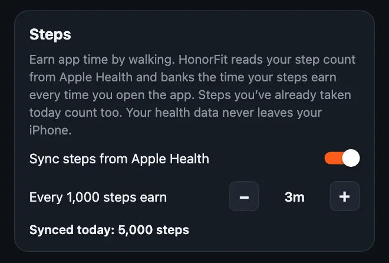
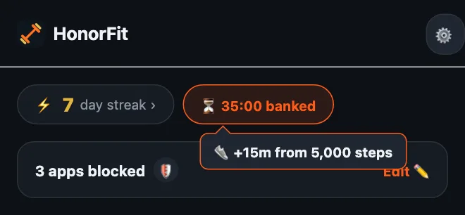

Your steps can earn screen time now
Hey y'all! Quick one about the newest HonorFit feature, which came straight out of a user email. HonorFit is the app blocker where you earn your screen time by doing pushups (or squats, or kegels, or whatever you pick) on the honor system. No camera.
A user asked: my phone already counts my steps, so why can't those earn time too? Good question. So now they do. HonorFit can read your step count from Apple Health on iPhone or Health Connect on Android and turn it into app time automatically.
How to switch it on
- Update HonorFit to 1.18.0 or later.
- Tap the gear on the home screen and find the Steps card.
- Turn on Sync steps from Apple Health (iPhone) or Sync steps from Health Connect (Android).
- Allow Steps when your phone asks. HonorFit only asks to read steps. Nothing else.
That's it. The steps you've already taken today count right away, and you'll see “Synced today” with your count under the switch.

On Android you need Health Connect, which is built in from Android 14. On older phones HonorFit sends you to Google Play to get it. You also need something that records steps into Health Connect, like Google Fit, Samsung Health or Fitbit. Your phone counting steps somewhere doesn't always mean it shares them.
How much time do steps earn?
By default, every 1,000 steps earn 3 minutes. You can change that right under the switch, from a fraction of a second up to as much as you want.
| Steps | At 3 min per 1,000 (default) | At 5 min per 1,000 |
|---|---|---|
| 2,000 (a 20-minute walk, roughly) | 6 minutes | 10 minutes |
| 5,000 | 15 minutes | 25 minutes |
| 10,000 | 30 minutes | 50 minutes |
How I'd pick: an easy walk is somewhere around 100 steps a minute, give or take. If you've set up a timed Walk exercise at its default of 30 seconds per minute, then about 5 minutes per 1,000 steps keeps your steps and your logged walks worth about the same. If you walk a lot anyway (dog, commute, job on your feet), keep it lower so your apps don't just unlock for free every day.
When do steps show up?
Every time you open HonorFit. That includes opening it from the lock screen when a blocked app runs out of time. It reads your total for the day, banks the steps you took since the last time, and shows a little “👟 +15m from 5,000 steps” on the home screen.

So the move is: go for a walk, then open HonorFit, and your time is there. It never pays you twice for the same steps. If the last sync was yesterday, the steps you took late yesterday get credited to yesterday first. With “Reset at midnight” on, those late steps still show up in yesterday's history, but they don't add time to today, because yesterday's balance has already been reset.
HonorFit doesn't read your steps in the background. It only reads them when you open it. Your step history shows up in History under its own Steps view.
Is it free?
Yep, step sync is free, and there's no cap on steps. The one free-tier limit that applies is the usual one: free banks up to 2 hours of app time. If your bank is full, steps beyond that don't carry over. Pro ($3 a month or $19.99 once in the US) banks unlimited time.
Two other small things: hard mode and sick mode only change what your reps are worth, not your steps. And steps don't count as a workout for your streak. Do some reps for that.
One honest-system note: if you log a timed Walk and sync your steps, you're getting paid twice for the same walk. Nobody's going to stop you, but pick one. My suggestion: let steps cover walking around, and log workouts for actual workouts.
Seeing 0 steps?
- iPhone: iOS never tells apps whether you said no to reading steps. It just hands over zero. Open the Health app, tap your profile picture, then Apps → HonorFit, and turn on Steps.
- Android: open Health Connect (HonorFit's Steps card shows an Open Health Connect button when it finds no steps) and check that HonorFit can read Steps. Then check that your step app, like Google Fit, Samsung Health or Fitbit, is writing steps into Health Connect.
- Then come back to HonorFit. It checks again as soon as you're back on the Settings screen.
What about my health data?
HonorFit reads one thing: your step count. It never writes anything to Apple Health or Health Connect, and the number never leaves your phone. There's no account and no server for it to go to. The full details are in the privacy policy.
If you've got ideas like this one, the support page goes straight to my inbox. This whole feature exists because somebody wrote in.
HonorFit Blocker is a free app blocker for iPhone and Android. Earn screen time with pushups, any exercise you pick, and now your steps. Honor system, no camera, nothing leaves your phone.